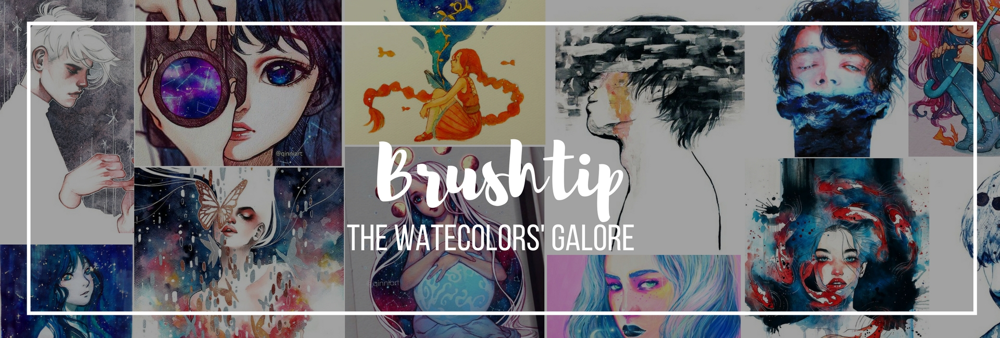

Brushtip
Painting has been a very effective way to communicate with people.
Through the different shades of color and the distinct strokes,
an artist can truly express his emotions. Brushtip is a website that helps you
connect to excellent watercolor paintings by famous artists known in social media.
You can buy their finished canvases or even watch their videos.
Brushtip is the galore for watercolors' masterpieces.
ENJOY